Nessie Nessa Jellycat
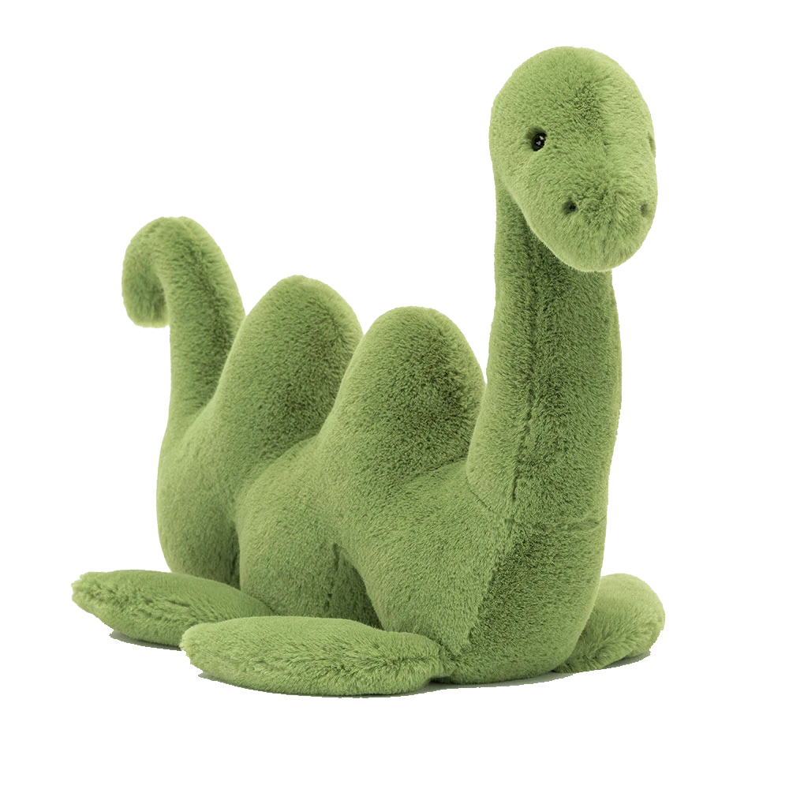
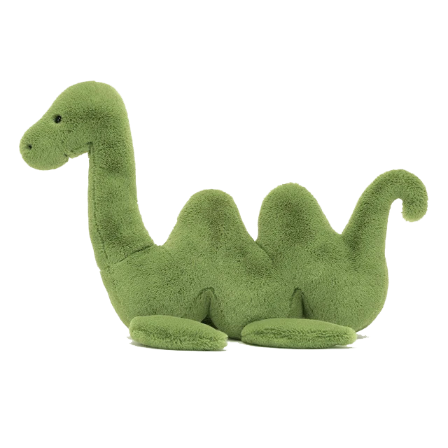
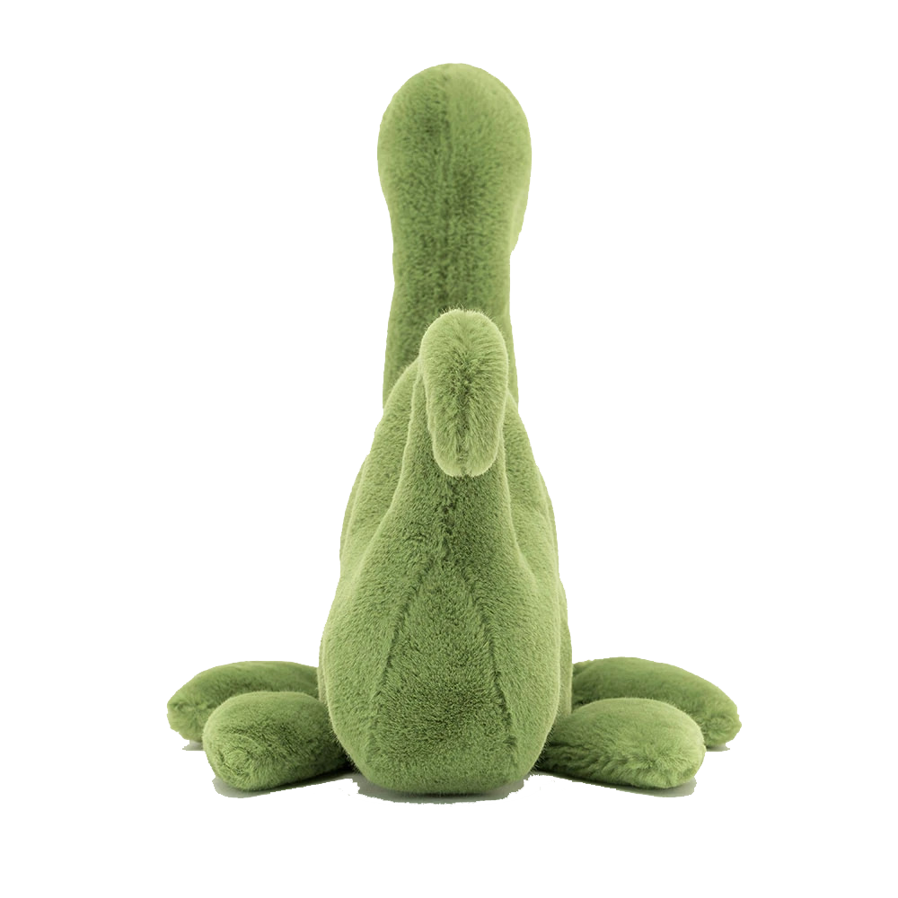
"Nessie Nessa is no longer shy, and is popping up out of the loch for hugs! This grass-green monster is beautifully soft, with a wiggly body, flopsy fins, shiny eyes and a beany base. A mossy legend with stories to tell, Nessie is doing Scotland proud."

What Do We Know About the Loch Ness Monster?
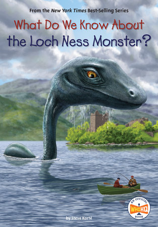
if you want you can buy it here
Dorrie - Mario
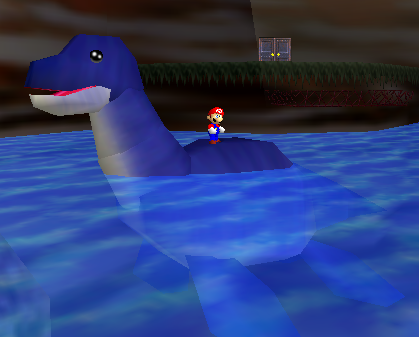
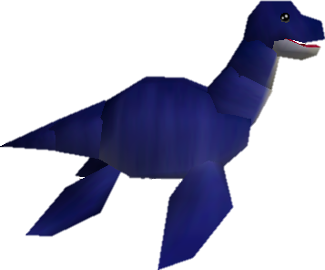
Lapras - Pokemon
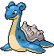
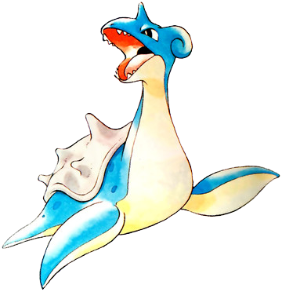
Google Maps!!
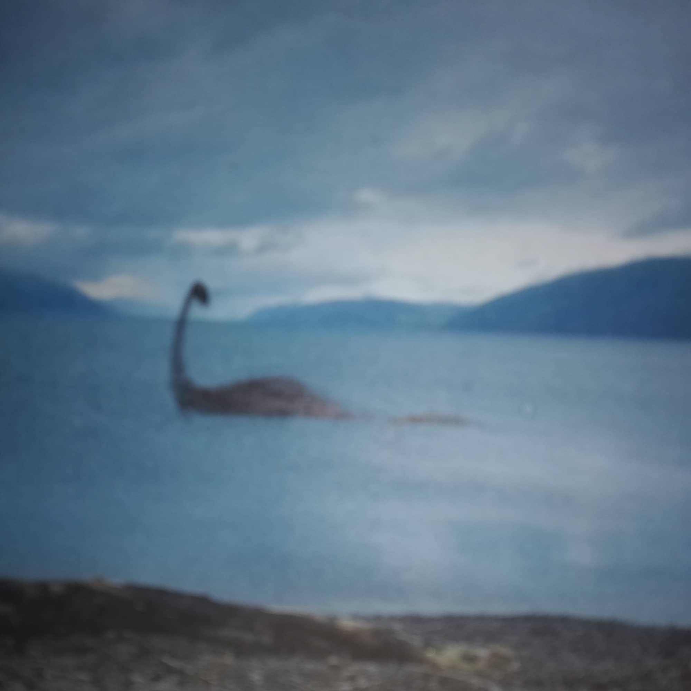
click here for a little easter egg
Take a look at the little street view dude 😉
Splatfest - Splatoon
Nessie vs Aliens vs Bigfoot
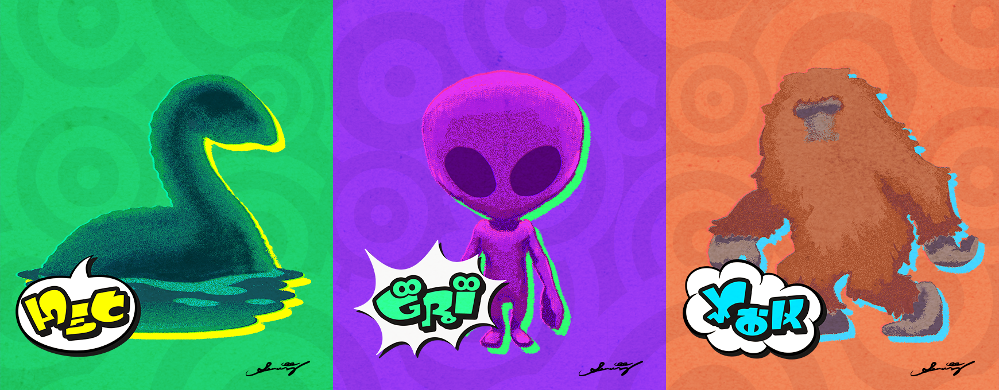
Click here for more information on the battle
Kamibashi String Doll Keychain
"The case of the mysterious creature said to be living in Loch Ness in the Scottish Highlands has never been solved. Is it real or just a legend? Regardless of how you answer that question, we know for a fact that this little string Nessie reminds you to believe in yourself when you are in over your head."

You can buy one here...I suppose...if you wat to copy me...
Gourdy - Ace Attorney
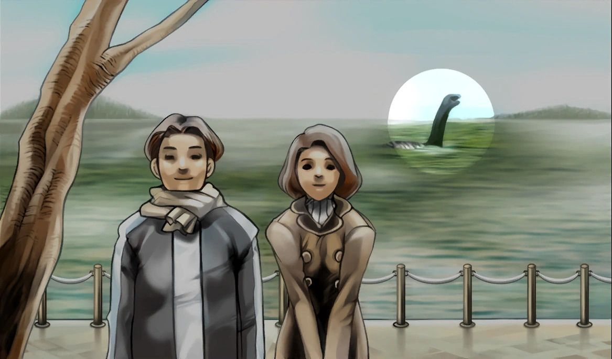
Everytime I see a Loch Ness Monster refrence I save it to my instagram highlights
here are a few of my favs
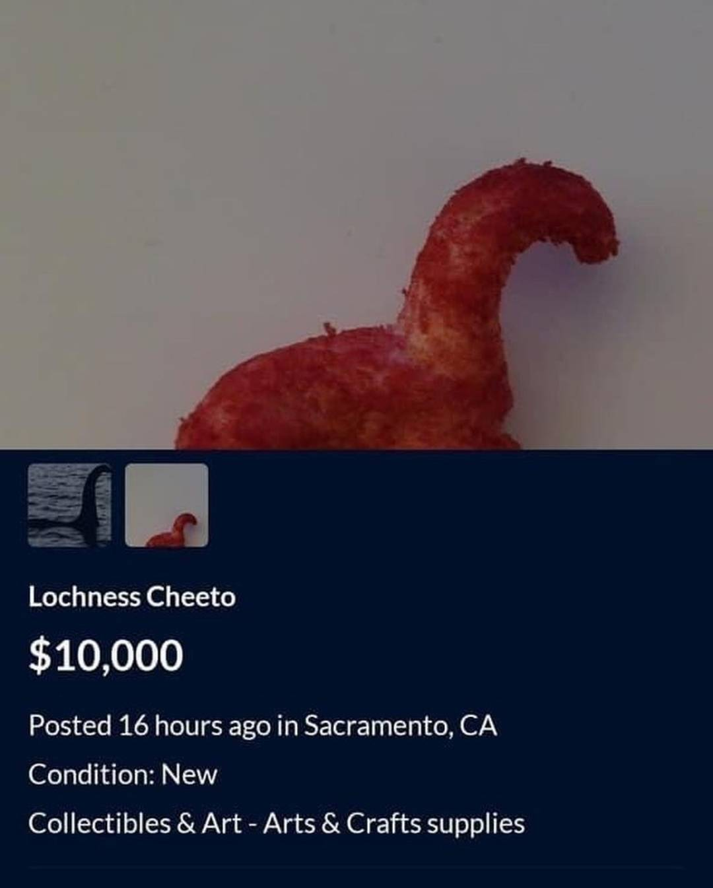
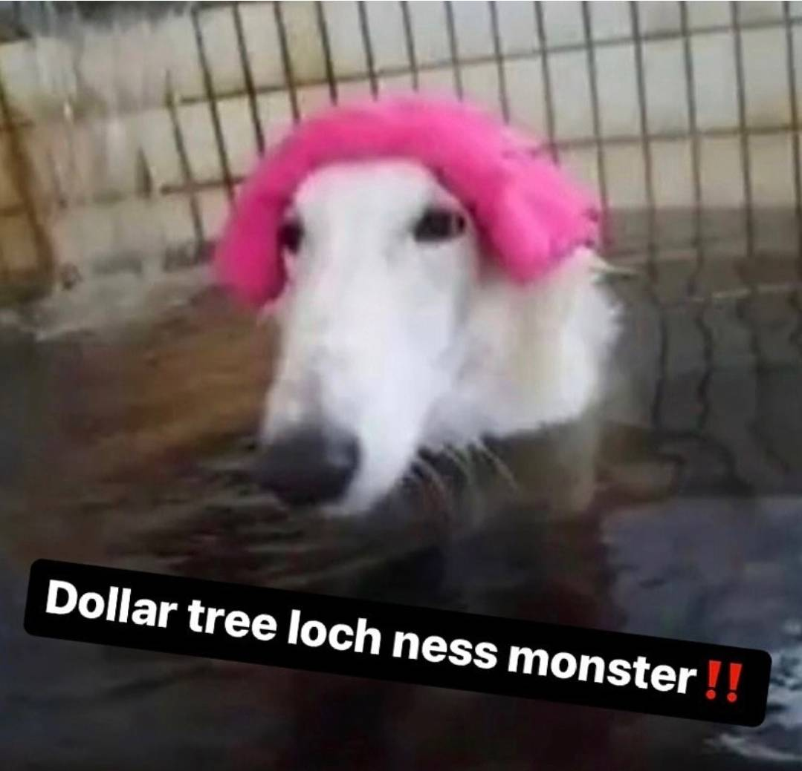
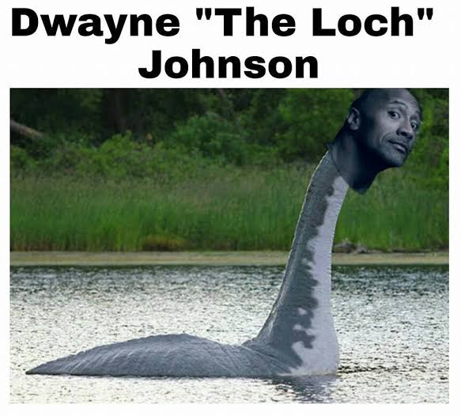
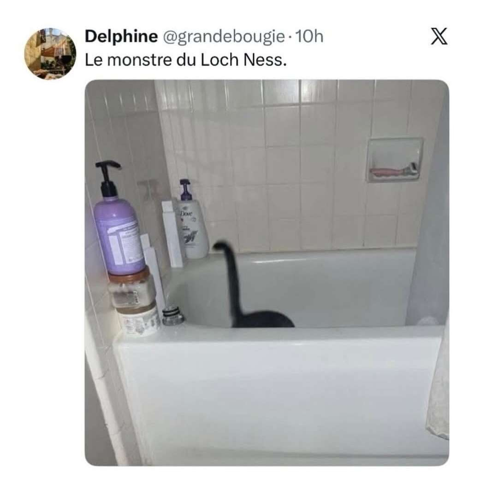